Big data governance for industrial-scale machine learning, data science and predictive analytics.
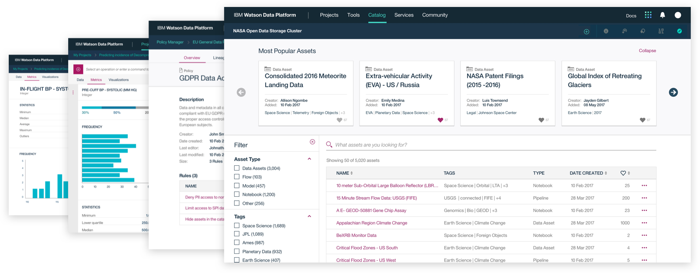
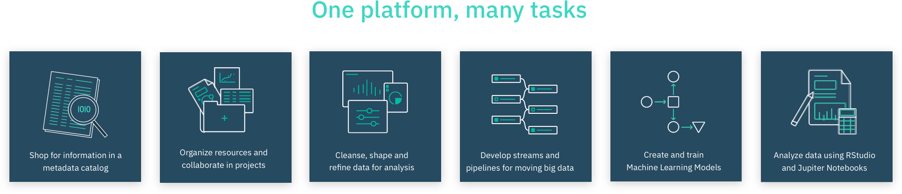
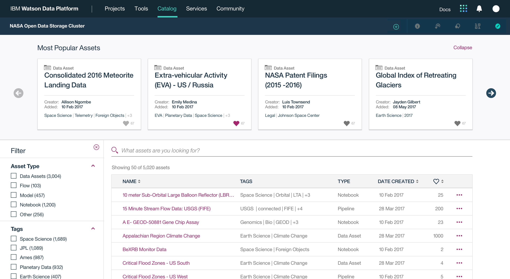
The Watson Data Platform is IBM's first cloud native data cataloging and analytics product designed to facilitate industrial-scale data science, machine learning and predictive analytics for the world's largest companies. The product is now live and you can try it for free today.
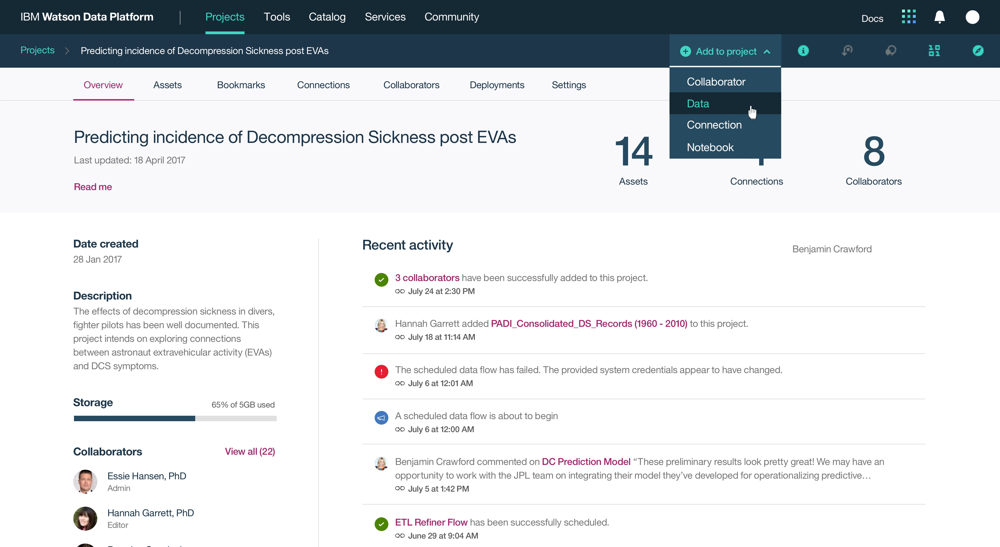
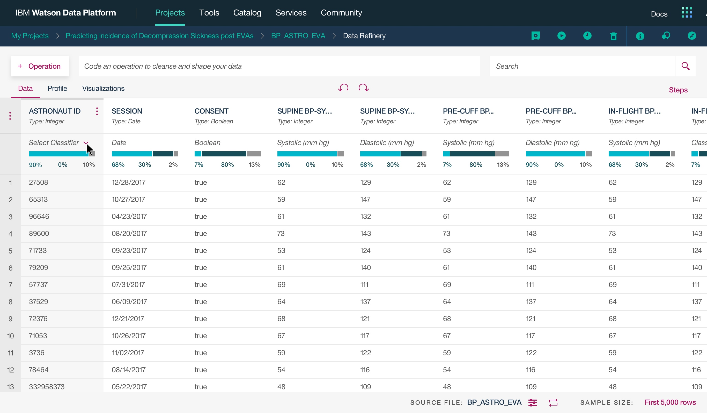
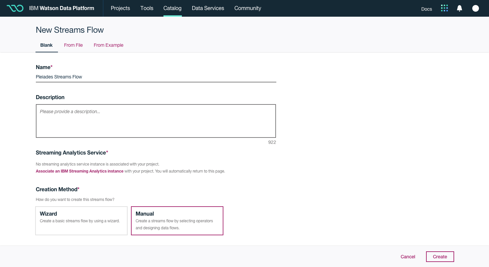
Building off the success and visual language of IBM's Data Science Experience, Watson Data Platform is the result of a years-long effort to redesign legacy big data tools and combine them in a single cloud platform.
Using human-centered methodologies, our team of 60 designers, researchers and front-end developers worked with a legion of product managers and software engineers all around the world to focus on one goal: help data analytics teams work better together.
This was a large goal with many different problems to solve and vastly different users to solve for. Our team was broken down into squads that each tackled a different task data teams must complete. Over the course of a year, we designed experiences that enable data teams to discover, ingest, catalog, govern, and analyze information.
Here's a quick summary of the parts of the Watson Data Platform that were already taking shape before I joined the team:
Data consumers shop for data using a secure metadata catalog. To find relevant data, they search, filter or browse structured and unstructured information assets.
Projects allow data scientists and business analysts to form teams around shared goals. Shared information assets, notebooks, models, bookmarks and tutorials let teams learn from each other and analyze data quickly.
Data refinery enables data teams to prepare their own data for further analytics. More technical users can interrogate data directly through code and less technical users can access shaping operations through a UI.
Data from external warehouses and repositories can be connected to the enterprise catalog or directly into a project. Users select a data source and target, and WDP creates and maintains the connection.
Data scientists can analyze data in notebooks using the tools that are familiar to them. IBM Watson Data Platform leverages open source tools such as RStudio and Jupiter Notebooks.
IBM Watson Data Platform recently added Watson Machine Learning, which lets data scientists create, train, and deploy models for use in applications.
Data science and machine learning models built with the Watson Data Platform are only as good as the data they consume. When data that's poorly classified, incomplete or of bad quality is used to train models, the results can be disastrous. Additionally, organizations that store and utilize personally identifiable or other sensitive data for analytics must ensure that their data is treated with the respect and security it demands.
My squad was tasked with solving both of these problems by creating the data governance and metadata cataloging tools the platform was to include. Although data governance is typically thought of as an IT-focused requirement, our mandate was to think about how data governance could increase the quality of analysis while enforcing compliance with regulation.
How might we build new governance tools that enable teams to understand, trust and protect the data these analytic assets ingest? How might we design experiences that let data science teams move from a walled castle to a controlled sandbox?
In addition to the catalog itself, our mission was to research and design a policy manager, business glossary and a dashboard to monitor governance initiatives.
When I joined the governance group in early 2017, there were only three team members. Bhavika Shah , our design lead, Tina Zeng our design researcher, and our product manager, Jay Limburn , were just completing a months-long deep dive into how modern governance teams in large organizations worked. It was an exciting time to join the team because we had the opportunity to dive into a complicated space, a blank canvas and executive support for building tools based on user needs.
Although I focused on UX Design, I helped Tina synthesize research, identify pain points and write needs statements for the Watson Data Platform's governance and metadata cataloging capabilities.
As the project progressed, I worked with two visual designers ( Kacie Eberhart and Joshua Kramer ) and a front-end developer ( Tom Workman ) to refine the vision and develop the designs into a working product.
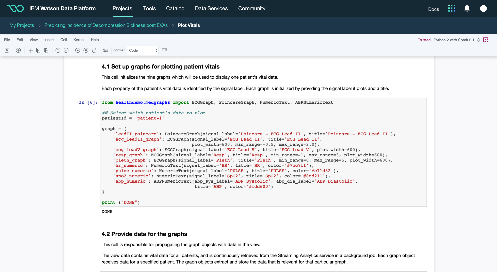
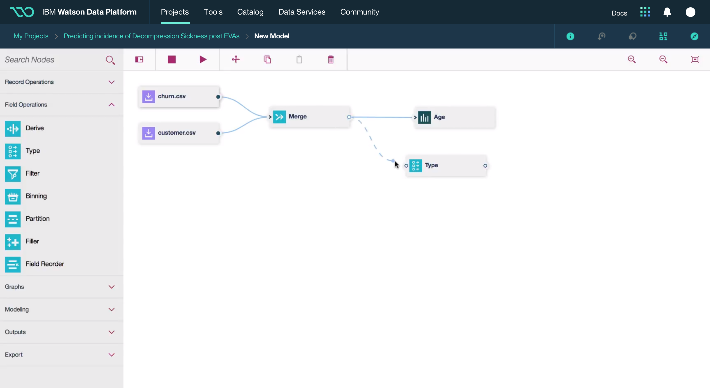
To prepare for our first design sprint, our team spent several weeks learning as much as we could about data ingestion, discovery, metadata management and governance. Thankfully, Tina and Jay had already laid the groundwork for us with the in depth research they conducted around data governance and compliance teams.
Tina had spent several months interviewing, observing and learning about modern data governance best practices before I joined the team. By talking with IBM customers, internal IBM governance teams and subject matter experts in the field, she began to assemble a proto-persona for an emerging role that is beginning to show up more frequently in mature enterprises: the Chief Data Officer.
The Chief Data Officer is an executive role that serves as a bridge between the teams in their organization that handle data infrastructure and the business units that depend on good data for making decisions. They typically have many responsibilities, but the most common deal with ensuring that data is captured, stored, governed and used in ways that provide value to the business while remaining compliant with industry regulation.
Her research also looked into the structure of the chief data office. Chief data officers typically manage a team of governance professionals who span widely different roles. Each of these team members are typically focused on either business tasks or technical tasks, however there are several roles that work in the grey area between the two.
While I was getting up to speed with Tina and Jay's prior work around the Chief Data Officer, I was also trying to learn everything I could about the governance space by diving into secondary research. One of the most helpful sources of information to help get a high-level understanding were analyst reports from companies such as Forrester and Gartner.
In addition to these analyst reports, I also worked with my product manager to identify IBM's data governance competitors. Unlike consumer products, evaluating complex enterprise software is rarely as easy as signing up for an account and testing it. For some products, I was able to sign up for a trial account and play around, but for most, I had to just read the documentation and watch tutorials to familiarize myself with how the tool worked. Most of the competition also publish helpful white papers that explain how they think about data governance, where they think the field is going and how they are responding to those changes.
At the beginning of the project, Tina and I were given the opportunity to attend IBM's bi-annual Chief Data Officer Summit in San Francisco. Over the life of the project, we returned to this conference twice, but the first time we attended, we had a few important goals:
The CDO Summit was an awesome learning experience because it's a little bit like Alcoholics Anonymous for chief data officers. During the small group breakout sessions, the CDOs all got together in a circle to talk about what topics were stressing them out and what they hoped to improve on. They also got to share best practices and tips for new CDOs.
Some of the highlights of this trip were interviewing governance teams during the coffee networking sessions and getting to meet IBM's own Chief Data Officer. It was an eye-opening research trip that opened me up to our users' hopes, dreams and fears.
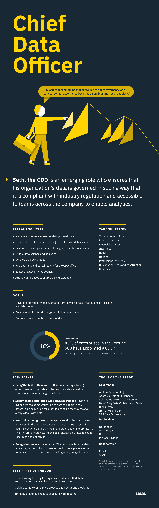
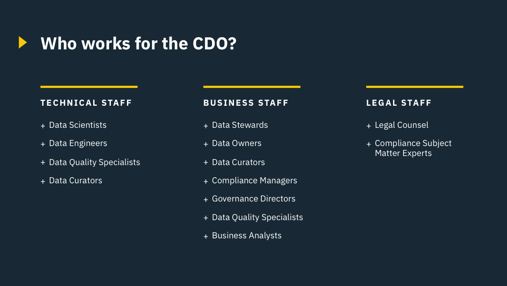
Once we had gathered everything that we knew about how governance teams work, we met with the other 6 design researchers across the other squads on the platform to synthesize information. During this week-long workshop, we hoped to solidify our understanding of who we were building for and how these personas currently work together to accomplish common data tasks.
Each team came to the workshop armed with quotes, diagrams and photographs taken from their own research activities they had conducted with their users. At the beginning of the week, each team introduced us to the user they were solving for. Then, we spent the remainder of the week working together to compare, cluster and organize data points.
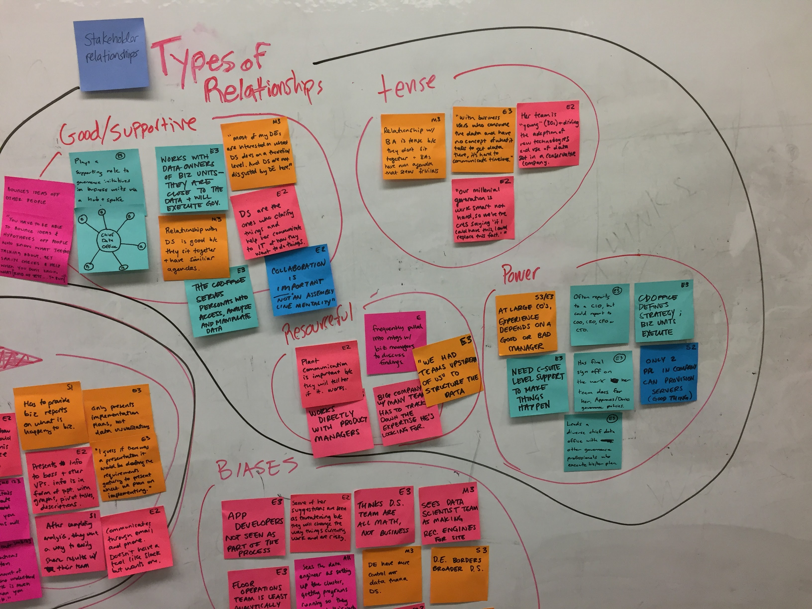
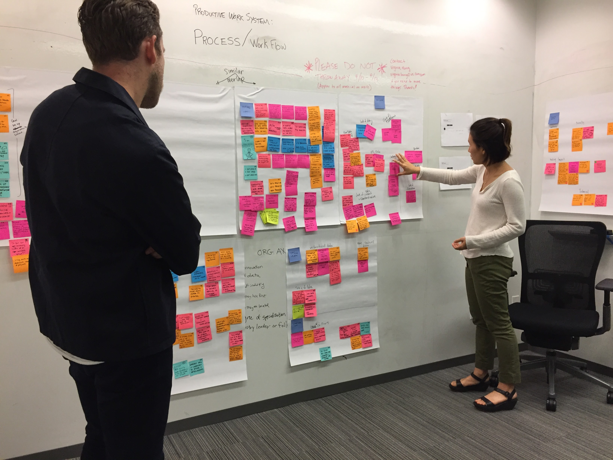
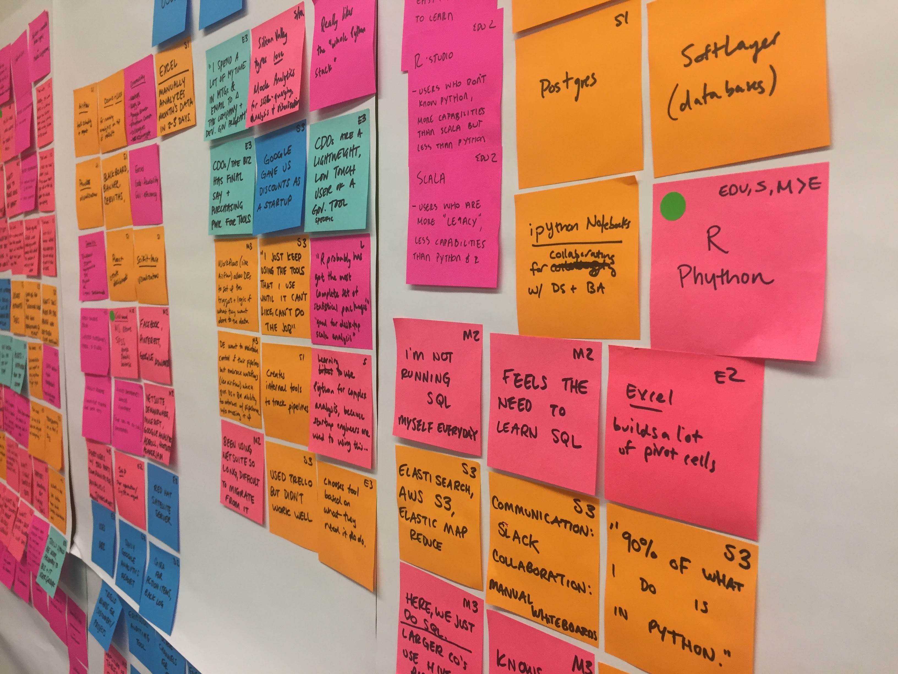
Data teams spend the majority of their time searching for data, not analyzing it. Because organizations often store information assets in data warehouses across the company, data consumers often have to answer time consuming questions when starting a new analysis project. Where can I find relevant data? Who owns the data and how can I request access?
The diagram below shows the average amount of time data consumers spent working with data, broken down by task type.
Consumers of data can only trust and analyze information if they understand what each column in a dataset means, where the dataset came from and what transformations may have been applied already. Often, this information can only be obtained through tribal knowledge of other teammates, because metadata about the dataset is often cryptic and not connected to the natural language businesses use to describe their data.
To help bridge the gap between technical and business metadata, governance teams assign data stewards to profile data. Using a tool like IBM Information Analyzer, they manually go column by column and run tests against data classifiers with the goal of asking the question "what's in this column?"
It's a tedious and complicated job, but mission critical to the rest of the data teams because it helps them understand data using a vocabulary they are accustomed to.
Most CDOs and governance teams have tools in place to author and document governance policies. Ensuring compliance by enforcing these policies, however, involves an expensive, manual testing and auditing process. Even when an organization is regularly testing their governance initiatives, there is currently no easy way to understand which policies are working as intended in real-time.
Legacy IBM products that document governance policies and rules focus on the needs of governance teams, but aren't well suited to help data scientists and business analysts understand what they can and can't do with data. The interfaces of these tools are clunky, IT-focused and show so much information about a policy that it's overwhelming and unhelpful.
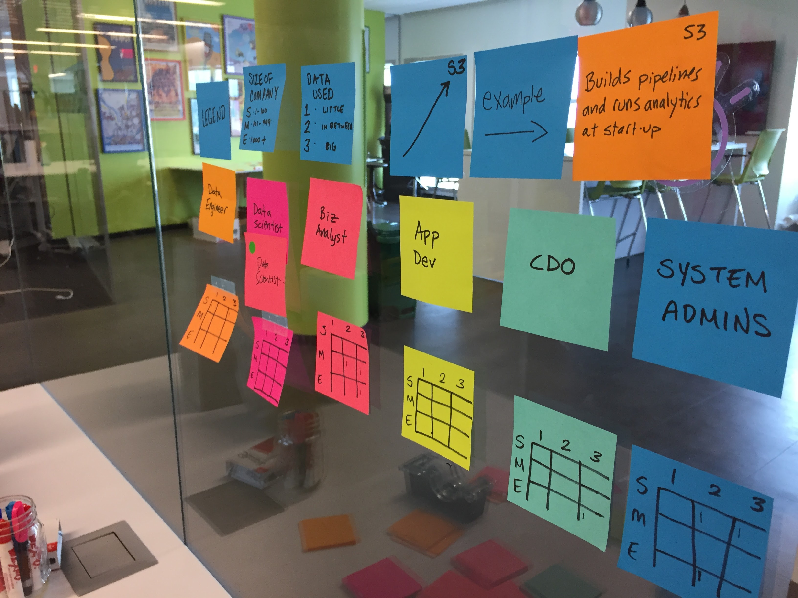
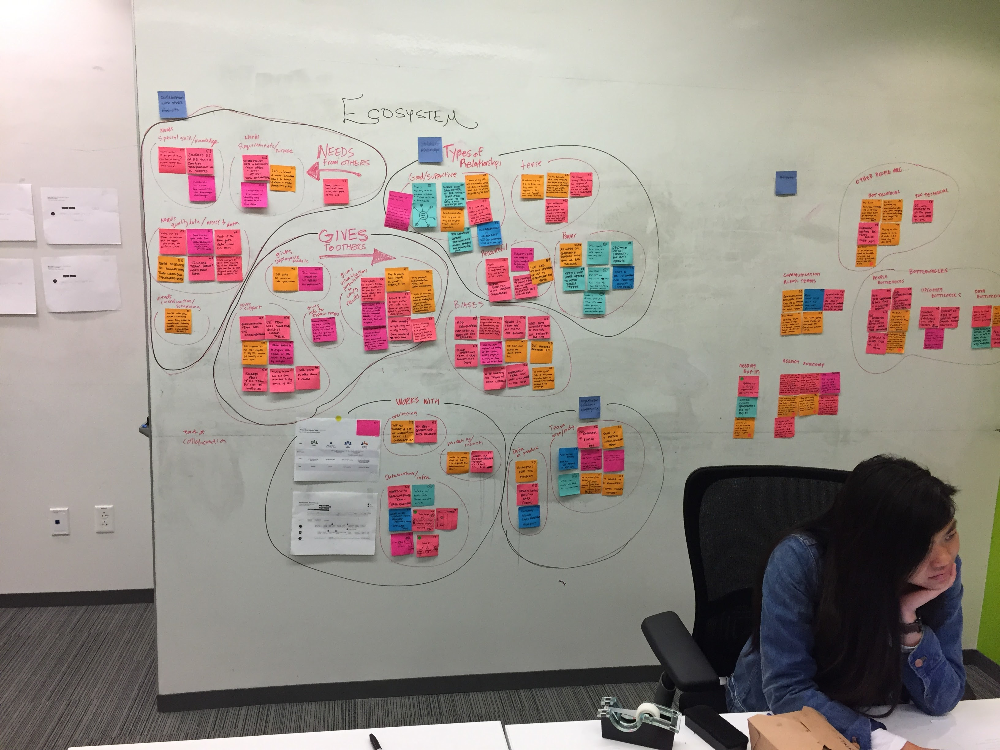
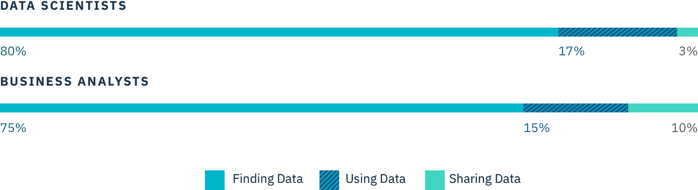
After our initial generative research phase, we switched gears into a period of scoping out a minimum viable versions of our to-be experiences. Armed with our understanding of our users, the tasks they are trying to accomplish and their pain points, we began to identify needs by writing hills.
Once we were confident that we had a good understanding of how data teams work together and the problems that we wanted to solve, we began solidifying our to-be experience by writing Hills. As explained in my previous IBM StoredIQ for Legal case study , at IBM, we use Hills as a design tool to align our teams around a common vision for what we are building. Hills focus on user enablement and always define who we are solving for, what that person should be able to do and why it’s important.
For our open beta, we focused on writing three hills focused on the policy manager, business glossary and governance dashboard.
Because this was a large design project with many different components, it was essential to determine how we wanted users to move across the experiences when completing tasks. I worked with my researcher, product manager, design lead and dev lead to sketch out user flow diagrams to accomplish this. For each of the three hills, I created several separate flows that solidified our intent for how we wanted users to engage with each part of the product and made adjustments as needed.
These diagrams were supplemented by other information architecture artifacts such as sitemaps that showed the hierarchy and connections between elements in the platform.
While we were finalizing the information architecture, we started sketching and creating mid-fi wireframes for each of the three governance experiences.
Data policies and rules are at the core of most governance programs. One of the biggest pain points for governance teams are that policies and rules serve as documentation but cannot actually be enforced upon the data. A unique feature of our offering is that our engineering team has created a powerful policy enforcement engine that could directly govern data in the catalog. My challenge as a UX designer was to allow the members of a CDO office to interact with the Data Policy Service (DPS) to create data governance rules with complex logic and nest these rules in policies and categories without having to code anything.
Another challenge when designing the Policy Manager was thinking through how to build an organization system that's simple enough for an MVP but complex enough to be able to hold our clients' realistic governance policies and rules. We experimented broadly with different organization methods, whether or not we should allow policies and rules to be nested within each other and how we should handle the lifecycle of policies from draft state to archive.
The business glossary serves as a key part of any governance program. These glossaries map business metadata with technical metadata. They enable consumers of data to understand what each column in a dataset means without having to dive deep into "tribal knowledge" that may or may not still be in the team. This means that data scientists and business analysts can spend less time trying to decipher the cryptic column names written by database administers. Instead, they can understand every part of their asset using the terminology their business already uses.
When we began designing the business glossary, I spent most of my time thinking about the term detail pages. We had to start deciding what information on the detail page was necessary, what was nice to have and what could be not included. The business glossary in IBM's legacy tool Information Governance Catalog included about 50 attributes per term and we had heard that this was daunting and frustrating for users.
During our sketching process, Tina and I conducted several card-sorting activities with our sponsor users. Because they were remote, we had to do them over a web conference (which has its own challenges!) We needed to prioritize the possible attributes about a business term our engineering team was prepared to support and map these against real user needs.
In the end, the only pieces of metadata we decided to store about a business term were the name of the term itself, it's definition, a longer description, the owner of the term, who created it, when it was created, when it was last edited and who edited it. We also created a related content tab that lets the user see which policies and rules the term has been used in and what data in the catalog has columns that have been been mapped to that business term.
Both the policy manager and business glossary described previously focused on creating, storing and managing information assets that are important to governance teams. The users responsible for completing these tasks are generally part of a CDO's team, but not the CDO. The primary persona of the governance dashboard is the Chief Data Officer himself. Thus, this tool is unique in that it isn't focused on productive use, but on monitoring and managing the system as a whole.
As we sketched our concepts, we focused on building a tool that helped alleviate some of the concerns we heard from CDOs during the research phase. Our goal was to enable a CDO to be able to answer a few key questions after glancing at the dashboard. How are my governance programs doing? Are my policies being violated? How often are they being enforced? Who are my most frequent violators? Which business terms are the most popular? What data assets are being used the most often in my data lake? Are these assets properly governed?
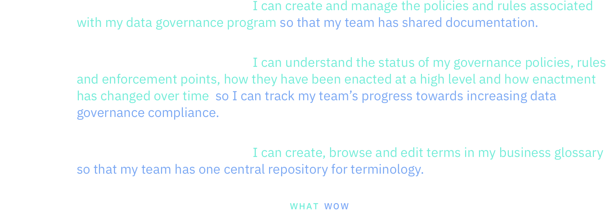
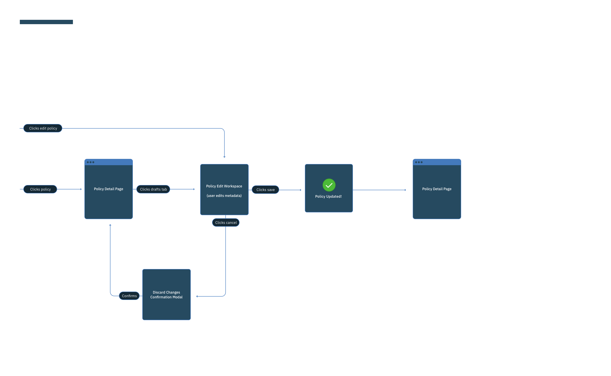
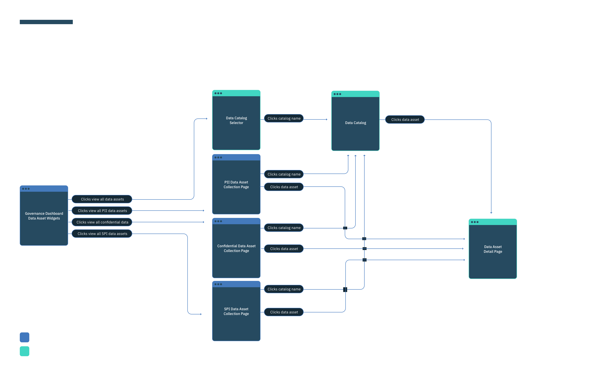
In December 2017, our set of governance tools for the Watson Data Platform went into a public open beta. Here are some of the experiences we provided to our users:
Unlike most governance tools that treat policies and rules as static documentation, the Watson Data Platform enables governance teams to quickly build data rules that are enforced directly in the catalog. All without having to know complicated querying languages.
Data Scientists and Business Analysts can lookup terminology that's relevant to their project and see all the related technical metadata.
The Chief Data Officer and his team can feel confident that assets in their organization’s catalog are governed correctly according to their data governance policies by checking metrics in a centralized dashboard.
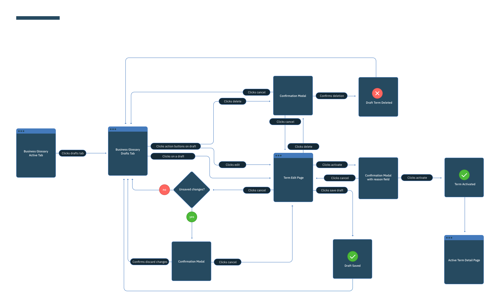
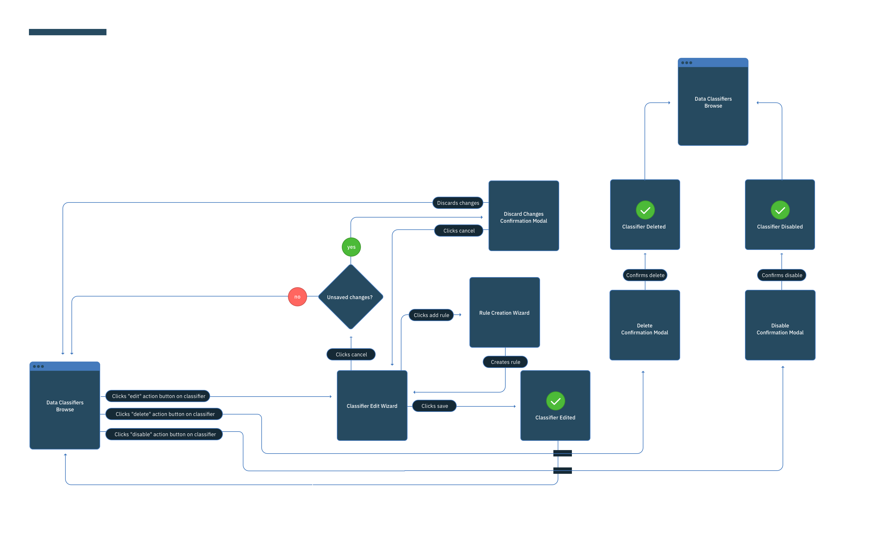
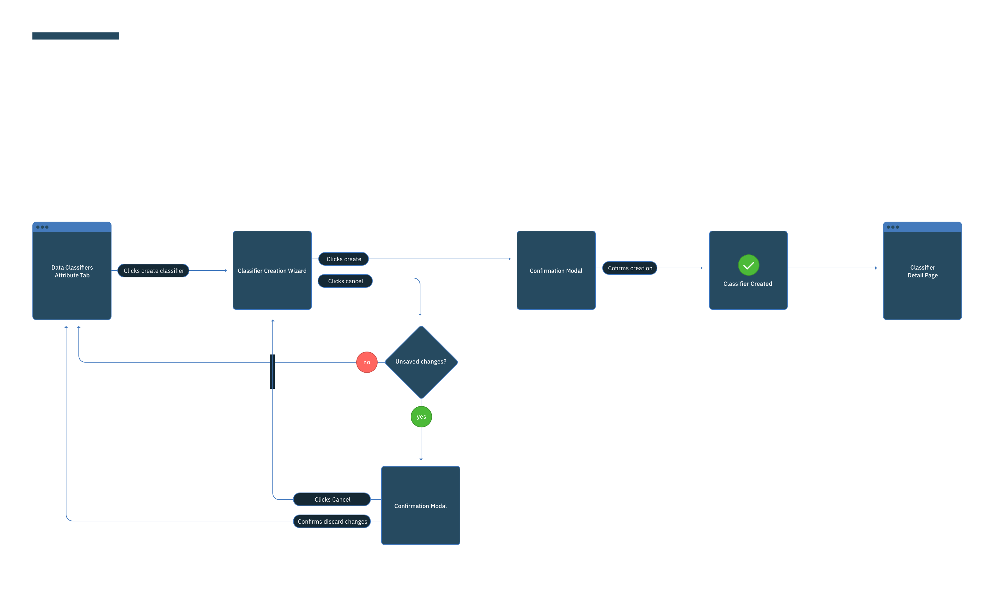
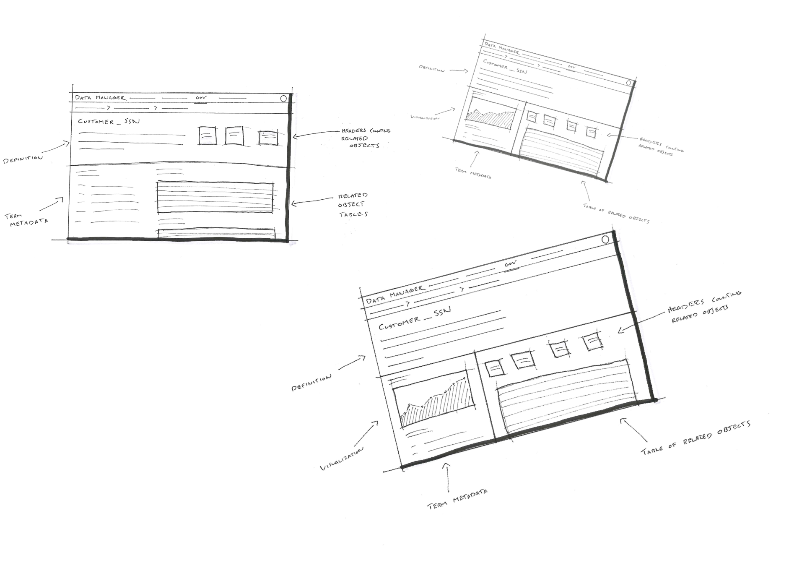
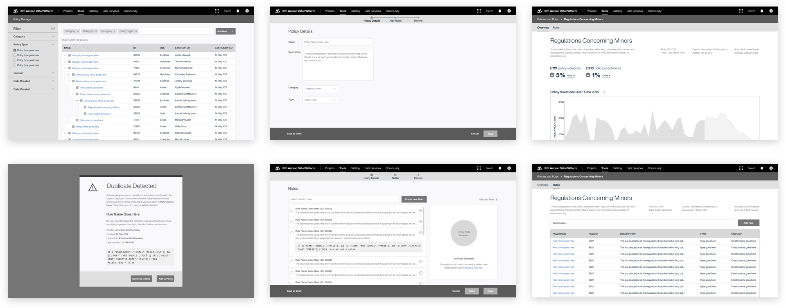
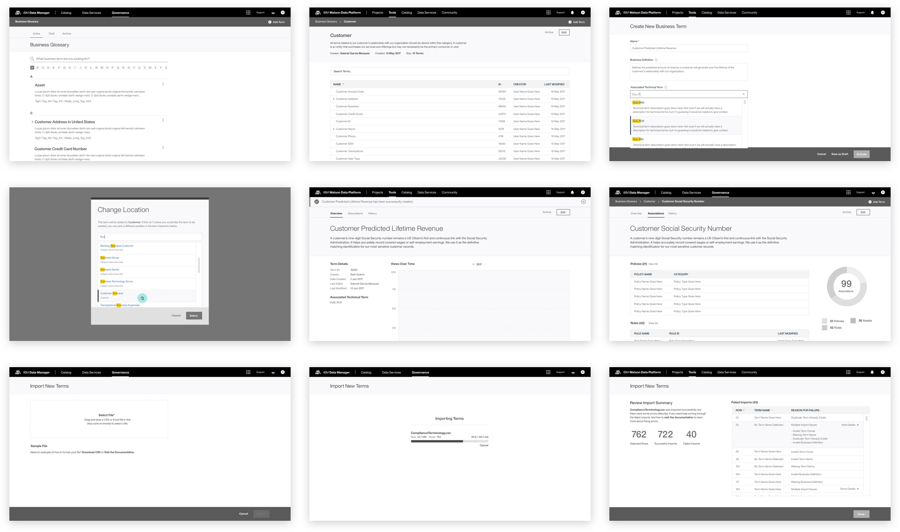
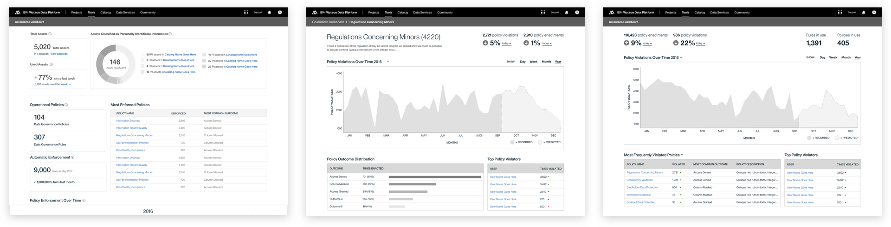
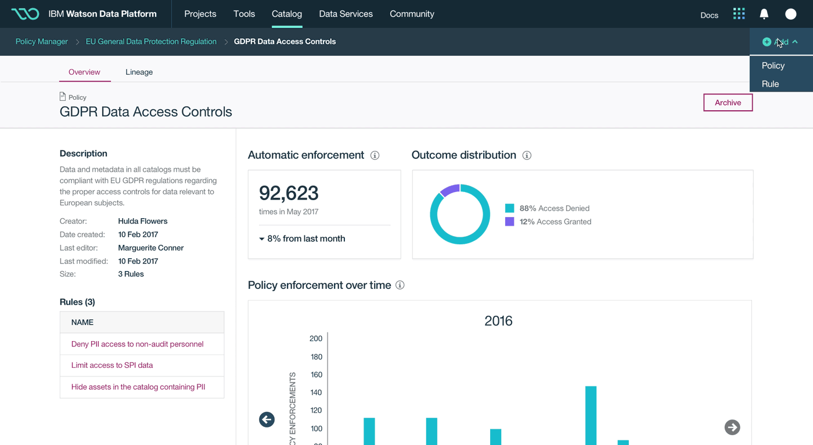
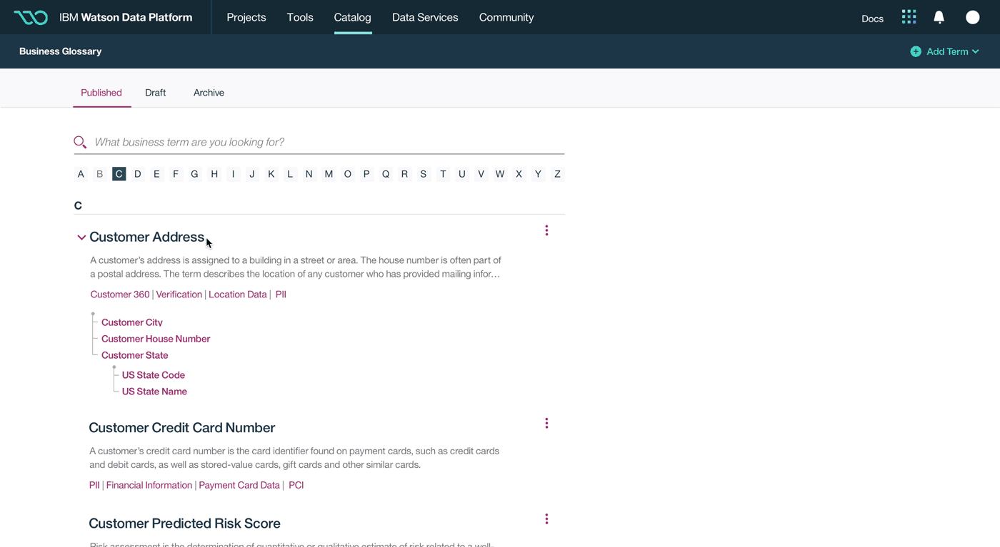
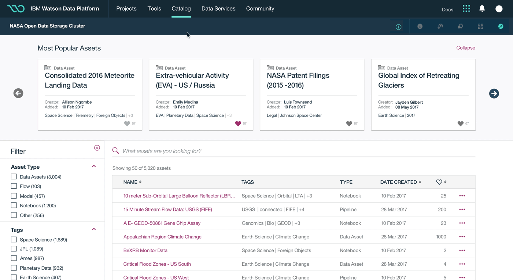
As we worked on synthesizing the data we received about our designs, a few areas of interest emerged where we can focus future design efforts.
Our users repeatedly expected to see workflow capabilities. For instance, while testing the creation process of policies, rules and terms, our customers frequently asked questions regarding review and approval processes.
The only thing that's missing is seeing where I am in a workflow
- CDO of a global bank
This is something we've known is important to our users from the beginning, but we didn't have time to implement for our MVP. Having this data will be valuable as we start to prioritize design sprints for 2018.
Our customers have invested millions of dollars standing up data governance systems with legacy IBM software. We need to gracefully allow our users to connect the on-prem systems we've already sold them so they don't have to spend time and money migrating policies, rules and terms they've already created.
We designed the interface of our catalog and governance tools to be tabular, information dense and focused on bulk actions. We decided to include as much relevant metadata as could because the users we spoke to who managed data catalogs, policies, rules, terms and data classes expected the tool to display information in a way they were used to seeing.
If users don't have management capabilities, we simply hid those functions. Even though certain buttons and part of the interface were hidden, we still mostly surfaced the same information to all roles in the same layout. However, it became apparent after testing with users outside of a governance team that this strategy doesn't work. For users shopping for data, looking up business terminology or wanting information on governance assets, the experience we built seems foreign and unapproachable. We need to broaden the scope of our testing to include all consumers of data who want to learn about data before pulling it into a project for analysis.
The product we built treats the governance dashboard, data classes, policy manager and business glossary as discrete micro services. Our users often expressed that the experience we delivered should feel more cohesive and highlight the connections between metadata in a more robust way.
The more I work with data and metadata, the more I see the whole world as a graph... I want to see a single pane of glass.
- Data steward in a a chief data office
Moving forward, we should explore ways of drawing out the connections between policies, terms, rules, models, notebooks and data assets to give the user a 360 degree view of their data catalog.